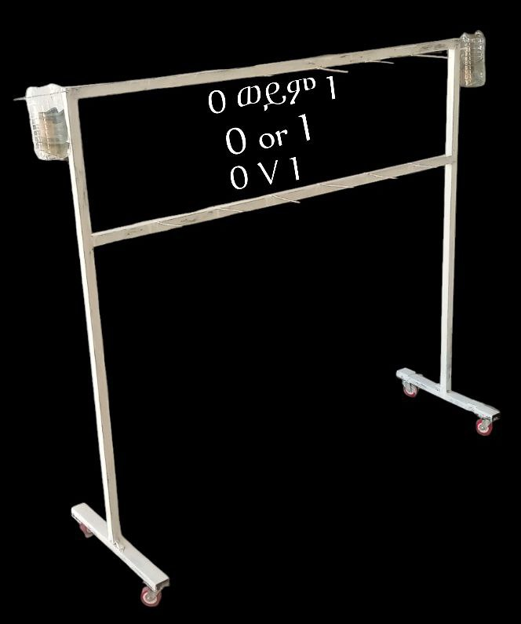
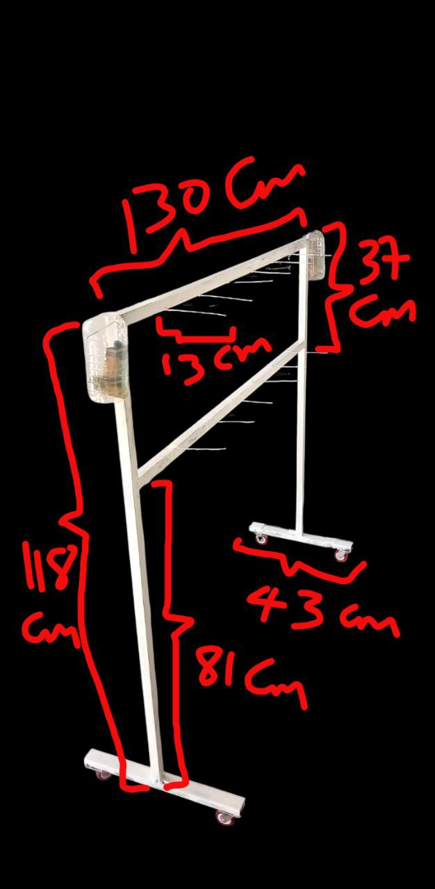

ዜሮ ወይም አንድ ትሬዲንግ አክሲዮን ማህበር
ማውጫ
ምዕራፍ 1: መግቢያ
ምዕራፍ 2: ለመፍታት የታሰበው ችግር
ምዕራፍ 3: የገበያው ምርመራ
ምዕራፍ 4: 0 ወይም 1 ጨዋታ ሞዴል
ምዕራፍ 5: ሽያጭ
ምዕራፍ 6: አባላቶች
ምዕራፍ 7: የገንዘብ ስርጭት
ምዕራፍ 8: የገበያው እድገት ጉዞና የወደፊት ስራወች
ምዕራፍ 1: መግቢያ
1.1 0 ወይም 1 ባጭሩ ሲገለፅ
0 ወይም 1 በሚከተሉት ነገሮች ይገለፃል።
ጨዋታ፣
ትምህርት፣
ሽልማት፣
ንግድ።
ወደ ማውጫ ተመለስ
1.2 ተልእኮ
የ 0 ወይም 1 ጨዋታ ተልእኮ እንደሚከተለው ነው።
ለማህበረሰቡ የተለያዩ ትምህርቶችን በአዛምድ መልክ እየተዝናኑ እንዲያውቁ
ማድረግ። ለምሳሌ የአንድን እንግሊዘኛ ቃል በአማርኛና በሌላ ተመሳሳይ ቃላቶች
በጨዋታ እየተዝናኑ እንዲያውቁ ማድረግ። ስለዚህ በዚህ መልኩ ተመራማሪ እና
አንባቢ ማህበረሰብን ማፍራት ይቻላል። ምክኒያቱም ከጉዋደኞቹ ጋር ተወዳድሮ
ለማሸነፍ ወይም ጨዋታውን ለማሸነፍ እንዲሁም ያሸነፈበትን ገንዘብ ለመውሰድ
ሲል ብዙ ያነባል። ከዚህ በተጨማሪ በጨዋታ መልክ የተማሩት ነገር የመረሳት
ዝንባሌው ትንሽ ነው።
ማህበረሰባዊ ተግባቦትን መጨመር። ይህን ጨዋታ ለብቻ መጫወት ቢቻልም ከሰው
ጋር ሆነው ሲጫወቱት ግን ይበልጥ ያምራል። ከዚህ በተጨማሪም በተጫዋቾች
መካከል ውይይትን ይፈጥራል።
ወደ ማውጫ ተመለስ
1.3 ራእይ
የ 0 ወይም 1 ጨዋታ ራእይ እንደሚከተለው ነው።
አንባቢ ማህበረሰብን ማፍራትና አዳዲስ እውቀትን ማስጨበጥ ነው።
በሆነ ጉዳይ ላይ ማህበረሰባዊ ውይይትን ማሳደግ።
ወደ ማውጫ ተመለስ
ምዕራፍ 2: ለመፍታት የታሰበው ችግር
2.1 የችግሩ መግለጫ
የችግሩን መግለጫ (statement of the problem) እንደሚከተለው ባጭሩ እናስቀምጠዋለን።
የአንባቢያን ማህበረሰብ እየቀነሰ መምጣት። በብዙ ምክኒያት ሰወች ቁጭ ብለው
ማንበብ የተውበት ጊዜ ነው። ከብዙወቹ ምክኒያቶች ውስጥ ጠቃሚ ያልሆነ ሶሻል
ሚዲያ ላይና በአልባሌ ቦታወች ጊዜን ማጥፋት የተለመደ ሆኗል።
ወደ ማውጫ ተመለስ
2.2 የችግሩ መፍትሔ
የችግሩ መፍትሔ ይሆናል ተብሎ የታመነበት እንደሚከተለው ተቀምጧል።
ማንበብን ወይም ጥናትን መዝናኛና ገንዘብ ማግኛ እንዲሁም ደግሞ ሽልማት
የሚያስገኝ ማድረግ። ከማጥኛ ወይም አዲስ እውቀትን ከማግኛ ዘዴወች ውስጥ
አንደኛው ነገሮችን በተመሳሳያቸው በማዛመድ ማወቅ ነው። ለምሳሌ የአንድ
እንግሊዘኛ ቃል ብዙ ተመሳሳይ ቃላቶች አሉት። እነሱን በማዛመድ ለመሸምደድ
መሞከር ጥሩ ከሚባሉት ዘዴ ውስጥ አንዱ ነው። ግን ደግሞ ይሄን ልምምዶሽ አይረሴ
ለማድረግ በጨዋታ መልክ ሆኖ በቡድን እየተዝናኑና እየተወያዩ ሲሆን ተመራጭ
ያደርገዋል። ለምሳሌ ካርድ በማዘጋጀት የእንግሊዘኛ ቃላቶችን ማጥናት በሚል ዙሪያ
የተጠኑ ሳይንሳዊ ጥናቶች አሉ (ለምሳሌ፣ እነዚህን ይመልከቱ፣ [1-10])
ነገሮችን በአይነት አይነታቸው እያዛማዱ ማወቅ ያመራምራል፣ ጠያቂ ያደርጋል፣
ከጓደኛ ጋር ያከራክራል፣ ማመሳከሪያ መፅሃፍ ፍለጋ እስከመሄድ ድረስ ያደርሳል።
እናም በዚህ መልክ ሲሆን ያን ነገር ለመርሳት ብዙ ጊዜ ይጨርሳል።
ማዛመድን ደግሞ ከጓደኛ ጋር ሆነው እየተዝናኑ በጨዋታ መልክ ካደረጉትና
እውቀትንና ማወቅን ለማበረታት ደግሞ ለአሸናፊው ጉርሻ በመስጠት ከሆነ
ጨዋታውም ተወዳጅ ይሆናል ማለት ነው።
ከላይ ከ1-3 የተጠቀሱትን መፍትሔወች ለማከናወን የተለያዩ አይነት አዝናኝ
ጨዋታወችን ማዘጋጀት።
ወደ ማውጫ ተመለስ
ምዕራፍ 3: የገበያው ምርመራ
3.1 ደንበኞች
ይህ ገበያ በማንኛውም እድሜ ክልል ያለን ያሳትፋል። በጨዋታ መልክ የተዘጋጀ
ስለሆነና በአይነቱ ደግሞ አዲስና አስተማሪ የሆነ ስለሆነ ብዙ ደንበኞች ይኖሩታል ተብሎ ይገመታል።
3.2 ተወዳዳሪ ሓይላት
በኢኮኖሚ የዳበሩ ግለሰቦች ወይም ድርጅቶች ይሄን የገበያ ሞዴል የመወዳደር አቅም
አላቸው። ምክኒያቱም የገንዘብ ችግር ስለሌላቸው ባንድ ፀሃይ ግባት ገበያውን
ማጥለቅለቅ ይችላሉ።
3.3 መጠንና የመስፋት አቅም
ብዙ የአክሲዮን ባለድርሻ አካላትን የሚያሳትፍ ስለሚሆን በመጠን ሰፊ ነው። ይህ
አክሲዮን በብዛት መምህራንን የሚያሳትፍ ስለሚሆን በመጠኑ እየሰፍ የሚሄድ
ይሆናል ተብሎ ይታመናል።
ይህ ገበያ በውስጡ ብዙ አይነት ለወደፊቱ እየተፈለሰፉና እየዳበሩ የሚሄዱ የጨዋታ
ሞዴሎችን ስለሚይዝ በመላው ኢትዮጵያ ይስፋፋል ተብሎ ይታመናል።
ምዕራፍ 4: 0 ወይም 1 ጨዋታ ሞዴል
የሚከተለው ምስል 1 የ 0 ወይም 1 ጨዋታ መጫወቻ ቴብል ሲሆን ከዚህ በተጨማሪም የዜሮ ወይም አንድ ትሬዲንግ አክሲዮን ማህበር መለያ አርማም ነው።
ምስል 2 ደግሞ የ 0 ወይም 1 መጨወቻ ቴብል ምስል 1 ልኬቷን በሴንቲ ሜትር ያሳያል።
ምስል 1: የ 0 ወይም 1 መለያ አርማ (logo)

ምስል 2: የ 0 ወይም 1 መጫወቻ ምስል 1 ልኬት
ወደ ማውጫ ተመለስ
4.1 መስሪያ እቃወች
ብረት ወይም እንጨት፣
የወረቀት ካርዶች።
ስለዚህ 0 ወይም 1 የሚባለው የጨዋታ ሞዴል በብረት (ወይም በእንጨት) እንዲሁም
ደግሞ ከወረቀት ካርዶች በቀላል ወጭ የሚሰራ የጨዋታ አይነት ነው።
ማስታወሻ፡ የ 0 ወይም 1 ጨዋታ ማጫወቻ ቴብል 2 መርፌ፣ 3 መርፌ፣ 4 መርፌ ፣
ወዘተ ሊኖረው ይችላል። ከላይና ከታች ያሉት መርፌወች ብዛት አንድ አይነት ነው። ባለ 2
መርፌ ስንል ከላይና ከታች ያለውን ቆጥረን ሳይሆን የላይኛውን ብቻ ቆጥረን ነው። ለምሳሌ
ከላይ ያለው ስእል ባለ 6 መርፌ ይባላል። ታችኛው ድርቡ አይቆጠርም።ወደ ማውጫ ተመለስ
4.2 የካርድ አዘገጃጀት
ካርዶችን በ Latex እናዘጋጃቸዋለን። ቀላል የሆነ Latex ነው የምንጠቀመው። የ Latex
template ስላለ ለማንኛውም የካርድ አዘጋጅ ሰራተኛ ይሰጠዋል።
ካርዶቹን በደረጃ እንከፋፍላቸዋለን። ማለትም ደረጃ 0.1፣ ደረጃ 0.2፣ ወዘተ እያልን
እንከፍላቸዋለን። ለምሳሌ ጠቅላላ እውቀት (general knowledge) ካርዶችን gen-
eral knowledge 0.1፣ general knowledge 0.2፣ general knowledge 0.3፣ ወዘተ
እያልን እንከፋፍለዋለን።
ወደ ማውጫ ተመለስ
General knowledge 0.1፣ ወዘተ እያሉ የሚቀጥሉት ካርዶች ማንኛውንም እውቀት
የሚያጠቅልሉና ሰፊ ናቸው። General Knowledge 1.1፣ ወዘተ እያሉ የሚቀጥሉት
ግን ከአንደኛ ክፍል የትምህርት አይነቶች የተውጣጡ ጠቅላላ እውቀት ናቸው። Gen-
eral Knowledge 2.1፣ ወዘተ እያሉ የሚቀጥሉት ደግሞ ከሁለተኛ ክፍል የትምህርት
አይነቶች የተውጣጡ ጠቅላላ እውቀት ናቸው። ሌላው ምሳሌ ደግሞ የ 1ኛ ክፍል En-
glish ትምህርት ካርዶችን English 1.1, English 1.2, English 1.3, ወዘተ እያልን
እንከፋፍለዋለን። ለሌሎችም የትምህርት አይነትና የክፍል ደረጃ እስከ ዩኒቨርስቲ ድረስ
በዚህ መልኩ ካርዶች ይዘጋጃሉ ማለት ነው።
የካርዶች ብዛት ከአጫዋች ካርዶች በስተቀር የ 8 ብዜት እንዲሆኑ ለማድረግ የሚከተለውን
እናደርጋለን። አጫዋች ካርዶች የሚባሉት ከላይኛው መርፌወች የሚቀመጡት ናቸው።
የመርፌወች ብዛትና የአጫዋች ካርዶች ብዛት እኩል ነው። ለምሳሌ ባለ 6 መርፌ 0
ወይም 1 ጨዋታ ቴብል ቢኖረን የማጫወቻ ካርዶች ብዛትም 6 ነው ማለት ነው።
ስለዚህ ‘‘n” ን የካርድ ብዛት ይሁን ብንል ‘‘p” ን የመርፌው ብዛት ይሁን ብንል ‘‘k” ን
ደግሞ የ 8 ማብዣ ይሁን ብንል ‘‘n” ን ለማግኘት የሚከተለውን ቀመር እንጠቀማለን
ምክኒያቱም ‘‘p” እና ‘‘k” የተሰጡ ናቸው የሚፈለገው ‘‘n” ብቻ ይሆናል ማለት ነው።
$$n = 8k + p$$
ለምሳሌ የመርፌው ብዛት፣ p=6 ቢሆን፤ የ 8 ማብዣ ደግሞ፣ k=2 ይሁን ብንል።
ስለዚህ n = 8k + p = 8(2) + 6 = 22 ይሆናል ማለት ነው።
ማስታወሻ፤ የካርዶች ብዛት የ 8 ብዜት እንዲሆን የተፈለገበት ምክኒያት አጨዋወት
በሚለው ክፍል ውስጥ ገለፃ ይደረግበታል። 4.3 አጨዋወት
ጨዋታውን ለመጫወት ደረጃ 0.1፣ ደረጃ 0.2፣ ወዘተ ተብለው የተዘጋጁ ካርዶችና ዋናው
ቴብል ያስፈልጋል። ከደረጃ 0.1 ወደ ደረጃ 0.2 ስንሄድ የካርዱ ብዛት እየጨመረ ይሄዳል።
ጨዋታውን ለብቻ ወይም በቡድን መጫወት ይቻላል።
(ሀ) ለብቻ መጫወት -ይሄን ጨዋታ አንድ ሰው ብቻውን ሊጫወተው ይችላል ግን አሰልች
ነው። ምክኒያቱም ተወዳዳሪ ከሌለህ ደስ አይልም ልክ ብቻን ፑል እንደመጫወት ነው
የሚሆነው ስሜቱ።
(ለ) ለቡድን መጫወት -አንዱ ካርድ ዋጋ ይተመንለትና በካርዱ ልክ አጫዋቹ በተጫወቾቹ
ይከፈለዋል።
ለምሳሌ 18 ካርድ ብዛት ካለና የአንዱ ካርድ ዋጋ 1 ብር ከሆነና ሰወቹ ስድስት ሆነው
መጫወት ከፈለጉ እያንዳንዳቸው 3 ብር በማዋጣት ይከፍሉና ጨዋታውን መጫወት
ይችላሉ።
(ሐ) እርስ በርስ መሸላለም - ተጫዋቾች ጨዋታውን እርስ በርስ በመሸላለም ማድረግ
ከፈለጉ ተነጋግረው በፈለጉት ብር መጠን መጫወት ይችላሉ። ለምሳሌ ባጠቃላይ 18
ካርድ ካለና ስድስት ተጫዋቾች ካሉና እያንዳንዳቸው መቶ ብር አዋተው ቢጫወቱ
ሁሉንም የመለሰ ጨዋታውን ያሸንፋል። ለምሳሌ ከስድስቱ ውስጥ አንድ ሰው
ካሸነፈ፤ አሸናፊው 6*100=600 ብር ይበላል። ሁለት ሰወች ካሸነፉ 600 ብር ለሁለት ይካፈሉትና 300 ብር እያንዳንዳቸው ይደርሳቸዋል።
3 ሰወች ካሸነፉ እያንዳንዳቸው 600/3=200 ብር ይደርሳቸዋል። 4 ሰወች ካሸነፉ
600/4=150 ብር ይደርሳቸዋል። 5 ሰወች ካሸነፉ እያንዳንዳቸው 600/5=120 ብር
ይደርሳቸዋል። ስድስቱም ሰወች ካሸነፉ እያንዳንዳቸው 600/6=100 ብር ይደርሳቸዋል።
ማንም ካላሸነፈ ጨዋታውን እንደገና ይጫወታሉ። እንደገና መጫወት ያልፈለገ የስያዘውን
ብር መልሶ ይዞ መውጣት ይችላል። አንድ ተጫዋች ጨዋታውን ለማሸነፍ ሞዴሉ ላይ
እንዳየነው ሁሉንም የአዛምድ መልስ መመለስ አለበት።
ጨዋታው በሚከናወንበት ጊዜ ሁሌም የተንቀሳቃሽ ምስል ቀረፃ አለ። ማለትም ሁሉም
የ 0 ወይም 1 ጨዋታ በአጫዋቹ ይቀረፃል። የጨዋታው ቀረፃ በዩትይብ ይለቀቃል። ስለዚህ
ማንኛውም ፍላጎት ያለው የተጫወተውን ጨዋታ ዩቱይብ ላይ ገብቶ ማየት ይችላል፣
ቁማር ከተጫወቱ ማጭበርበር አይችሉም፤ እንደ ማስታወሻም ይሆናል፣ ወላጆችም
ልጆቻቸውን ዩትይብ ላይ በማየት መገምገም ይችላሉ፣ ልጆችም ካደጉ በኋላ
እንደማስታወሻ ሊጠቀሙበት ይችላሉ፣ ወዘተ ብዙ ጥቅም አለው።
ማስታወሻ ፤ አንድ ተጫዋች አንድን ካርድ ለማስቀመጥ የ 0 ወይም 1 ጨዋታ ቴብሉ
በያዘው የመርፌ (pin) ብዛት ሲባዛ በሁለት ሴኮንድ ይሰጠዋል። ለምሳሌ ከላይ እንዳለው
ስእል ቴብል ከሆነ እንደምታዩት የመርፌ ብዛቱ 6 ነው፣ ስለዚህ አንድን ካርድ ለማስቀመጥ
12 ሴኮንድ ይሰጠዋል ማለት ነው።
(መ) ውርርድ -ተመልካቾች የውርርድ ጨዋታ መጫወት ይችላሉ። ለምሳሌ 6 ተጫዋቾች
ካሉና ደረጃ 0.1 መጫወት ፈለጉ እንበል። ደረጃ 0.1 ደግሞ 18 ካርዶች አሉት እንበልና
ይሄን ጨዋታ ተጫውተው ለመጨረስ ደግሞ እያንዳንዳቸው ተጫዋቾች 3 ካርድ
ይደርሳቸዋል። ከመጀመሪያው ወደ ኋላኛው ተጭዋቾች 1፣2፣3፣4፣5፣6 ተብለው
ይሰየማሉ። ለምሳሌ ቁጥር-1 ተጫዋች የመጀመሪያውን ካርድ ስቦ አዛምዱን
ሊሰራው ይችላል። አዛምዱን ሲሰራው 1 ይባላል። ሁለተኛውን ካርድ ስቦ ደግሞ
አዛምዱን ላይሰራው ይችላል፣ አዛምዱን ካልሰራው 0 ይባላል። ይህ ተጫዋች
አሁንም ሶስተኛውን ካርድ ስቦ አዛምዱን ሊሰራው ይችላል፣ በዚህ ጊዜ 1 ይባላል።
ስለዚህ በቅደም ተከተል ቁጥር-1 ተጫዋች 101 ሆኖ ጌሙን ተሸንፎ ይወጣል። እናም
ከተመልካቾች ውስጥ ቁጥር-1 ተጫዋች 101 ነው ብሎ ከጓደኛው ጋር በገንዘብ
የተወራረደ ውርርዱን ይበላል ማለት ነው። በተመሳሳይ ሰወች እንደዚህ እየተወራረዱ
መጫወት ይችላሉ። ሁሌም ቀረፃ ስላለ ማፈር አይቻልም።
(ሠ) ሽልማት - በሽልማት መጫወት ካለሽልማት መጫወት የሚለየው ሽልማት ስላለው
ነው። የሽልማቱ ገንዘብ የሚሰበሰበው ፈቃደኛ ከሆኑ የማህበረሰብ ክፍል ይሆናል
ወይም ደግሞ እራሳቸው ተጫዋቾች ለሽልማት የሚችሉትን ሊያዋጡ ይችላሉ። በ 0
ወይም 1 ጨዋታ ሞዴል ላይ ሁለት አይነት የሽልማት ሳጥኖች አሉ። እነሱም ሽልማት ሳጥን ፩
እና ሽልማት ሳጥን ፪ ተብለው ይጠራሉ። ተጫዋቾች ሽልማት የሚያስገኝ
ወይም ሽልማት የማያስገኝ ጨዋታ ብለው መምረጥ ይችላሉ። ሽልማት
የሚያስገኘው ጨዋታ ሽልማት ከማያስገኘው የሚለየው ነገር በሚከተሉት ነው።
1ኛ) ሽልማት የሚያስገኘው ጨዋታ ሁሌም ቢሆን አንድ ተጫዋች 8 ብር ለቴብል ይከፍላል።
ሽልማት የማያስገኘው ግን ከ1 ብር ጀምሮ ሊሆን ይችላል። ማለትም ከላይ እንደገለፅነው
እንደተጫዋቾቹ ብዛትና መጫወት እንደሚፈልጉት የካርድ አይነት ይወሰናል።
2ኛ) ሽልማት የሚያስገኘው ጨዋት ሽልማት ከማያስገኘው የሚለየው ሽልማት የሚያስገኘው
ጨዋታ ካርድ ሁሌም ብዛቱ የ 8 ብዜት ነው። ዝቅተኛው 8 ሆኖ 8*2=16, 8*3=24, 8*4=32,
ወዘተ እያለ ይቀጥላል። ሁለት አይነት ሽልማት አሉ። እነሱም አንደኛ ለሚወጣው የሚሸለመው
የሽልማት አይነትና ሁሉም ተጫዋቾች የሚሸለሙት የሽልማት አይነት ነው። እነዚህን የሽልማት
አይነቶች ሽልማት ፩ እና ሽልማት ፪ ብለን እንለያቸዋለን።
ሽልማት ፩ ፤ ይህ የሽልማት አይነት አንደኛ ለሚወጣው ወይም ለሚወጡት
የሚሸለም የሽልማት አይነት ነው። በአንድ ጨዋታ ውስጥ አንድ ሰው ወይም ከዛ
በላይ ተጫዋቾች ሁሉንም የካርድ ጨዋታ ሊመልሱ ይችላሉ። ስለዚህ የሽልማት
ሳጥን ፩ ውስጥ ያለውን ሽልማት ይካፈላሉ። አንድ ሰው ብቻውን ካሸነፈ የሽልማት
ሳጥኑ ማለትም ሽልማት ሳጥን ፩ ውስጥ ያለውን ሽልማት ይወስዳል። ለምሳሌ እርስ
በርስ የመሸላለም ጨዋታ በሚል (ሐ) ላይ የተገለፀውን ማየት እንችላለን።
ሽልማት ፪ ፤ ይህ የሽልማት አይነት ከሽልማት ፩ የሚለየው ነገር ሁሉም ተጫዋቾች
የሚሸለሙት ነው። ሁሉም ተጫዋቾች ተጫውተው ጨዋታውን ከጨረሱ በኋላ
ከቁጥር 1 ተጫዋች እስከ መጨረሻው ቁጥር ተጫዋች ያለው ባንድ ላይ በቅደም
ተከተል ሲፃፍ ትርጉም ያለው የእንግሊዘኛ ቃል ከሰጠ ሽልማቱን ያሸንፋሉ ማለት
ነው። ስለዚህ ሽልማቱን ካሸነፉ ሽልማት ሳጥን ፪ ያለውን ሽልማት በመውሰድ እኩል
ይካፈላሉ። ለምሳሌ ሁለት ሰወች ሽልማት የሚያስገኘውን ጨዋታ መጫወት
ቢፈልጉና ከዛ በመቀጠል ደግሞ ባለ 8*2=16 ካርድ ብዛት ያለውን ጨዋታ መጫወት
ቢፈልጉ ለቴብል 16 ብር ይከፍሉና ጨዋታውን ይጀምራሉ።ለምሳሌ ተጫዋች ቁጥር 1 ጨዋታውን ከጨረሰ በኋላ 01101101=m ቢያገኝና ተጫዋች
ቁጥር 2 ደግሞ 01100101=e ቢያገኝ ሽልማቱን ያሸንፋሉ። ምክኒያቱም የሁለቱ ከቁጥር 1 ወደ
ቁጥር 2 ሲነበብ me ይሆናል። ስለዚህ ሽልማት ሳጥን ፪ ውስጥ ያለውን ሽልማት በመውሰድ
እኩል ይካፈላሉ። ሁለቱም ተጫዋቾች ግን ሽልማት ሳጥን ፩ ውስጥ ያለውን ሽልማት መውሰድ
አይችሉም ምክኒያቱም ሁለቱም ሙሉ ጨዋታውን አላሸነፉም ለማሸነፍ 11111111 ማግኘት
ነበረባቸው።
ማስታወሻ ፥ ተጫዋቾች ሽልማት ፪ ን አሸንፈው ለመውሰድ፤ የካርድ አዘገጃጀት
የሚለው ክፍል ውስጥ ከተጠቀሰው ቀመር ፤ n = 8k + p ውስጥ ‘‘k” የተጫዋቾችን
ብዛት ታመለክታለች ማለት ነው።
ማስታወሻ ፥ኮምፒውተር ከ a-z ያሉትን የኢንግሊዘኛ ፊደሎች በሚከተለው መልኩ ያውቃቸዋል፤ a=
01100001፣ b= 01100010፣ c= 01100011፣ d= 01100100፣ e= 01100101፣ f=
01100110፣ g= 01100111፣ h= 01101000፣ i= 01101001፣ j= 01101010፣ k=
01101011፣ l= 01101100፣ m= 01101101፣ n= 01101110፣ o= 01101111፣ p=
01110000፣ q= 01110001፣ r= 01110010፣ s= 01110011፣ t= 01110100፣ u=
01110101፣ v= 01110110፣ w= 01110111፣ x= 01111000፣ y= 01111001፣ z=
01111010።
(ረ) ሃገር አቀፍ ሽልማት ፥ ይህ በ 0 ወይም 1 ድርጅት የሚዘጋጅ የሽልማት አይነት ነው።
0 ወይም 1 ይሄን ሽልማት ለመሸለም የሚከተሉትን በቅደም ተከተል ያከናውናል።
1ኛ) በመጀመሪያ ደረጃ booklet ተዘጋጅቶና ታትሞ ይሸጠል። ስለዚህ ዋናው ካርድ
ከመለቀቁ በፊት ሰወች ይሄን booklet እያነበቡ ይቆያሉ ማለት ነው።
2ኛ) ከላይኛው ሲቀጥል ዋናውን ካርድ በመልቀቅ 0 ወይም 1 ድርጅት ሁሉም አካባቢ
ላይ በእኩል ሰዓት ጨዋታው እንዲጀመር ያደርጋል።
ማስታወሻ ፤ ለእያንዳንዱ የካርድ አይነት በየደረጃቸው የሽልማት መጠንና አይነት ይዘጋጃል።
አንደኛው የሽልማት አይነት በሃገር አቀፍ ደረጃ ካርዱ እንደተለቀቀ ወዲያውኑ ጨዋታውን
ተጫውቶ ላሸነፈ ሰው የሚሰጥ የሽልማት አይነት ነው። ልክ ሽልማት ሳጥን ፩ ላይ እንዳለው
ሆኖ ነገር ግን በዚህ ጊዜ ገንዘቡ ላሸናፊው በባንክ ነው የሚላክለት። በሃገር አቀፍ ደረጃ ይህ
ሽልማት ላንድ ሰው ብቻ ስለሚሸለም አሸናፊውን ለመለየት ወዲያውኑ አጫዋጩ የአሸናፊውን
ፎቶ፣ ቪድዮ፣ ሰዓትና ቦታ አያይዞ ለ 0 ወይም 1 ድርጅት ይልካል። ከዚህ ሲቀጥል ሁሉም
ቪድዮወች በ 0 ወይም 1 የ youtube አድራሻ ይለቀቃል። ይህ መሆኑ ለ 0 ወይም 1 ድርጅት
ጥሩ ነው ምክኒያቱም youtube ብዙ ተመልካች ይኖረዋል። ከዚህ በኋላ 0 ወይም 1 ድርጅት
ደግሞ ከሁሉም ቦታ የተላኩትን አወዳድሮ የተሻለ ሰዓት ያለውን ይሸልማል ማለት ነው።
ሁለተኛው የሽልማት አይነት ደግሞ በቡድን ተጫውተው ላሸነፉ የሚሰጥ የሽልማት አይነት
ነው። የዚህም ሽልማት አሸናፊ በሃገር አቀፍ ደረጃ አንድ ቡድን ብቻ ሲሆን ማን እንዳሸነፈ
የሚታወቀውም ከላይ እንደተጠቀሰው አንደኛው የሽልማት አይነት ነው።
ወደ ማውጫ ተመለስ
4.4 የተጫዋቾች ጥቅም
0 ወይም 1 ን በመጫወት ምን ምን ጥቅም ያስገኛል የሚለውን ባጭሩ እንደሚከተለው
እናስቀምጣለን
0 ወይም 1 ትምህርታዊ ጨዋታ ስለሆነ፣ 0 ወይም 1 ን መጫወት እራሥን በጨዋታ
እንደ ማዝናናት ነው፣
ከትምህርት ቤት በተጨማሪ ትምህርት እንደመማር ማለት ነው። ምክኒያቱም
የተማሩትን እንዳይረሳ የማድረግ ትልቅ አቅም አለው፣ የቡድን ጨዋታ ስለሆነ ከጓደኛ
ጋር እንዲወያዩ ያደርጋል፣ አዲስ ጓደኛ ማፊሪያ ዘዴም ነው፣
እርስ በርስ በመሸላለም ወይም ስጦታ እንደመሰጣጥ የሚለውን በመጫወት ሰወች
የሚዝናኑ ካሉ ይሄን ጨዋታ ይጫወታሉ። ጨዋታውን ተጫውቶ ማሸነፍ እውቀት
ስለሚጠይቅ 0 ወይም 1 ተጫውቶ ማሸነፍና ስጦታ ወይም ሽልማት ማግኘት ትልቅ
የውስጥ እርካታ ሊሰጥ ይችላል።
ከላይ እንደተገለፀው 0 ወይም 1 ን መጫወት በብዙ መልኩ ሽልማት ያስገኛል። ምንም
እንኳ ከማህበረሰቡ ሽልማት ባይኖር እራሱ አጫዋቹ ሽልማት ለሚገባው ይሸልማል።
የ 0 ወይም 1 ድርጅት ለአሸናፊ ተጫዋች ከሽልማት በተጨማሪ የተጫወተውን
የትምህርት አይነትና ደረጃ ጠቅሶ ሰርትፍኬት ይሰጠዋል። ይህ ሰርትፍኬት ለተጨዋቹና
ለ 0 ወይም 1 ድርጅት ትልቅ ጥቅም አለው። ለምሳሌ 0 ወይም 1 ድርጅት ለወደፊቱ
ለሚያወጣቸው የስራ ማስታወቂያ እንደ አንድ መስፈርት ሊይዘው ይችላል።
ለ IELTS, GRE, TOEFL ፈተናወችን ለመፈተን ዝግጅት ላይ ላለ ሰው በጣም
ይጠቅማል። ምክኒያቱም የኢንግሊዘኛ ቃላቶችን እንዳይረሳ አድሮጎ በጨዋታ መልክ
እየተዝናኑ እንዲያውቋቸው ስለሚረዳ።
ወደ ማውጫ ተመለስ
4.5 የገበያው ፍሰት
የዚህ ገበያ መድራት ወይም ፍሰት በሚከተሉት ምክኒያቶች ይቀጥላል ተብሎ ይታመናል
የጨዋታውን ተወዳጅነት በማህበረሰቡ ውስጥ እንዲሰርፅ በማድረግ።
የሚያጓጓና አፎካካሪ ለማድረግ ከደረጃ 0.1 ወደ ደረጃ 0.2 ስትሄድ የካርዱ ቁጥር
እየጨመረና እየከበደ እንዲሄድ በማድረግ።
እውቀታቸውን በመተማመን በዚህ ጨዋታ ተጫውተው ብዙ ገንዘብ ማግኘት
የሚፈልጉ አካላት ብዙ ይሆናሉ ተብሎ ይታመናል።
4.6 የገንዘብ ወጭ
ወጭ ለማውጣት የሚያስፈልጉን ብረት ወይም እንጨት ፣ የወረቀት ካርዶችን
ማሳተም፣ ቤት ኪራይ፣ ሰራተኛ መቅጠር፣ እና ማስታወቂያ መስራት ነው። ዋጋውም
እንደገበያው ተቀያያሪ ነው የሚሆነው።
4.7 የ 0 ወይም 1 የገንዘብ ምንጭ
የሚከተሉት ጥቂቶቹ የ 0 ወይም 1 የገንዘብ ምንጭ ናቸው።
ከአባላቶች የሚሰበሰብ፣
ከ youtube እና ሌሎች Social media የሚሰበሰብ፣
ከተለያዩ በጎ አድራጎት ድርጅቶችና ግለሰቦች የሚሰበሰብ፣
ከአጫዋቾች የሚሰበሰብ፣
ከተለያዩ የባንክና ሌሎች ብድር አገልግሎት ድርጅቶች የሚሰበሰብ፣
ከ Booklet ሽያጭ የሚሰበሰብ፣
ከ Card ሽያጭ የሚሰበሰብ፣
ከ ‘‘0 ወይም 1” ሃሳብ ሽያጭ የሚሰበሰብ። ለምሳሌ ለተለያዩ የቴሌቪዥን ዝግጅት
ሊሆን ይችላል ወይም ለሌላ ጉዳይ።
ወደ ማውጫ ተመለስ
4.8 ቁልፍ የንግድ አጋሮች
የዚህ ንግድ ቁልፍ የሆኑ አጋሮቻችን ትምህርት ቤቶችና ዩኒቨርስቲወች እንዲሆኑ
መስራት። ይሄን ለማድረግ መምህራንን በብዛት አክሲዮኑ ጋር እንዲቀላቀሉ ማድረግ።
ስለዚህ መምህራን የተማሪወቻቸውን እውቀት ለማዳበርና ገበያቸውን ለማድራት
ሲሉ ተማሪወቻቸውን ይሄን ጌም እንዲጫወቱና እንዲያነቡ ያበረታታሉ።
4.9 የገበያውን አቅም ማስፋፊያ ስልቶች
የገበያውን አቅም ለማስፋፋት በሚከተሉት ነገሮች ላይ ማተኮር አስፈላጊ ነው።
የሱቅ ቦታ -ገበያውን የደራ ለማድረግ ትምህርት ቤቶች እና ዩኒቨርስቲወች ያሉበት
አካባቢ በብዛት ቢኖር ተመራጭ ነው።የአንድ ጨዋታ ዋጋ -የአንድን ጨዋታ ዋጋ በቅናሽ ማድረግ ለምሳሌ ለአንድ ካርድ 1
ብር ማድረግ።ማስታወቂያ -በድርጅቱ ስም youtube እና የመሳሰሉትን በመክፈት የተለያዩ ማራኪ
የሆኑ ቪድዮችን እና ፅህፈቶችን ማሰራጨት።የገበያው ስፋትና አስተዳደር -ይህ አክሲዮን ማህበር ሃገር አቀፍ ሲሆን የራሱ ቦርድና
ፕሬዘዳንት ያለው አለማቀፋዊ ጥራቱን የጠበቀ ሆኖ የሚመሰረትና የሚተዳደር ነው
የሚሆነው። ስለዚህ ቢያንስ አንዳንድ ባለሃብቶችን ጨምሮ በሁሉም የኢትዮጵያ
ክፍሎች ከkg-ዩኒቨርስቲ ድረስ ያሉት መምህራንም ብዛት ብዙ ስለሆነ በዚህ ልክ ይህ
አክሲዮን ማህበር የመስፋፋት አቅም አለው ማለት ነው።
ወደ ማውጫ ተመለስ
4.10 የ 0 ወይም 1 ጆርናሎች (0 or 1 Journal of Cards) (ድህረ-ገፁን ይጎብኙ)
ይህ ጆርናል በማንኛውም የትምህርት ዘርፍ ያሉ ካርዶችን የሚያዘጋጅና የሚያትም ነው። ስለዚህ ማንኛውም የማህበረሰብ ክፍል ከዚህ ጆርናል በመግባት የሚፈልውን የካርድ አይነት በማውረድ
ለ 0 ወይም 1 ጨዋታ መዘጋጀት ይችላል ማለት ነው። ይህ ጆርናል አለም አቀፍ ጥራቱን የጠበቀ ነው የሚሆነው። አንድ ጆርናል ማሟላት የሚጠበቅበትን ነገር ሁሉ ያሟላ ነው የሚሆነው።
ለምሳሌ የራሱ website ያለውና በዚህ website ውስጥ መሟላት ያለባቸውን፣ ለምሳሌ፤ editorial board, aim and scope, author guidelines, etc የያዘ
ነው የሚሆነው። የሚከተሉት ጆርናሎች የ 0 ወይም 1 ጆርናሎች ይሆናሉ።
0 or 1 Journal of Cards for General Knowledge 0 - ይህ ጆርናል በማንኛውም የትምህርት ዘርፍ
ከ KG እስከ University ድረስ ያሉትን የሚዳስስ ነው።0 or 1 Journal of Cards for General Knowledge 1 - ይህ ጆርናል በማንኛውም የትምህርት ዘርፍ
ነገር ግን 1ኛ ክፍል ብቻ ያሉትን የትምህርት አይነቶች የሚዳስስ ነው።0 or 1 Journal of Cards for General Knowledge 2 - ይህ ጆርናል በማንኛውም የትምህርት ዘርፍ
ነገር ግን 2ኛ ክፍል ብቻ ያሉትን የትምህርት አይነቶች የሚዳስስ ነው።0 or 1 Journal of Cards for General Knowledge 3 - ይህ ጆርናል በማንኛውም የትምህርት ዘርፍ
ነገር ግን 3ኛ ክፍል ብቻ ያሉትን የትምህርት አይነቶች የሚዳስስ ነው።0 or 1 Journal of Cards for General Knowledge 4 - ይህ ጆርናል በማንኛውም የትምህርት ዘርፍ
ነገር ግን 4ኛ ክፍል ብቻ ያሉትን የትምህርት አይነቶች የሚዳስስ ነው።...
...
...
0 or 1 Journal of Cards for General Knowledge 12 - ይህ ጆርናል በማንኛውም የትምህርት ዘርፍ
ነገር ግን 12ኛ ክፍል ብቻ ያሉትን የትምህርት አይነቶች የሚዳስስ ነው።0 or 1 Journal of Cards for General Knowledge Degree - ይህ ጆርናል በማንኛውም የትምህርት ዘርፍ
ነገር ግን በ degree ደረጃ ብቻ ያሉትን የትምህርት አይነቶች የሚዳስስ ነው።0 or 1 Journal of Cards for General Knowledge Master - ይህ ጆርናል በማንኛውም የትምህርት ዘርፍ
ነገር ግን በ Master ደረጃ ብቻ ያሉትን የትምህርት አይነቶች የሚዳስስ ነው።0 or 1 Journal of Cards for General Knowledge PhD - ይህ ጆርናል በማንኛውም የትምህርት ዘርፍ
ነገር ግን በ PhD ደረጃ ብቻ ያሉትን የትምህርት አይነቶች የሚዳስስ ነው።0 or 1 Journal of Cards for English 0 - ይህ ጆርናል በEnglish የትምህርት ዘርፍ
ከ KG እስከ University ድረስ ያሉትን የሚዳስስ ነው።0 or 1 Journal of Cards for English 1 - ይህ ጆርናል በEnglish የትምህርት ዘርፍ
ነገር ግን 1ኛ ክፍል ብቻ ያለውን የሚዳስስ ነው።0 or 1 Journal of Cards for English 2 - ይህ ጆርናል በEnglish የትምህርት ዘርፍ
ነገር ግን 2ኛ ክፍል ብቻ ያለውን የሚዳስስ ነው።0 or 1 Journal of Cards for English 3 - ይህ ጆርናል በEnglish የትምህርት ዘርፍ
ነገር ግን 3ኛ ክፍል ብቻ ያለውን የሚዳስስ ነው።0 or 1 Journal of Cards for English 4 - ይህ ጆርናል በEnglish የትምህርት ዘርፍ
ነገር ግን 4ኛ ክፍል ብቻ ያለውን የሚዳስስ ነው።...
...
...
0 or 1 Journal of Cards for English 12 - ይህ ጆርናል በEnglish የትምህርት ዘርፍ
ነገር ግን 12ኛ ክፍል ብቻ ያለውን የሚዳስስ ነው።0 or 1 Journal of Cards for English Degree - ይህ ጆርናል በEnglish የትምህርት ዘርፍ
ነገር ግን በ degree ደረጃ ብቻ ያለውን የሚዳስስ ነው።0 or 1 Journal of Cards for English Master - ይህ ጆርናል በEnglish የትምህርት ዘርፍ
ነገር ግን በ Master ደረጃ ብቻ ያለውን የሚዳስስ ነው።0 or 1 Journal of Cards for English PhD - ይህ ጆርናል በEnglish የትምህርት ዘርፍ
ነገር ግን በ PhD ደረጃ ብቻ ያለውን የሚዳስስ ነው።0 or 1 Journal of Cards for Mathematics 0 - ይህ ጆርናል በMathematics የትምህርት ዘርፍ
ከ KG እስከ University ድረስ ያሉትን የሚዳስስ ነው።0 or 1 Journal of Cards for Mathematics 1 - ይህ ጆርናል በMathematics የትምህርት ዘርፍ
ነገር ግን 1ኛ ክፍል ብቻ ያለውን የሚዳስስ ነው።0 or 1 Journal of Cards for Mathematics 2 - ይህ ጆርናል በMathematics የትምህርት ዘርፍ
ነገር ግን 2ኛ ክፍል ብቻ ያለውን የሚዳስስ ነው።0 or 1 Journal of Cards for Mathematics 3 - ይህ ጆርናል በMathematics የትምህርት ዘርፍ
ነገር ግን 3ኛ ክፍል ብቻ ያለውን የሚዳስስ ነው።0 or 1 Journal of Cards for Mathematics 4 - ይህ ጆርናል በMathematics የትምህርት ዘርፍ
ነገር ግን 4ኛ ክፍል ብቻ ያለውን የሚዳስስ ነው።...
...
...
0 or 1 Journal of Cards for Mathematics 12 - ይህ ጆርናል በMathematics የትምህርት ዘርፍ
ነገር ግን 12ኛ ክፍል ብቻ ያለውን የሚዳስስ ነው።0 or 1 Journal of Cards for Mathematics Degree - ይህ ጆርናል በMathematics የትምህርት ዘርፍ
ነገር ግን በ degree ደረጃ ብቻ ያለውን የሚዳስስ ነው።0 or 1 Journal of Cards for Mathematics Master - ይህ ጆርናል በMathematics የትምህርት ዘርፍ
ነገር ግን በ Master ደረጃ ብቻ ያለውን የሚዳስስ ነው።0 or 1 Journal of Cards for Mathematics PhD - ይህ ጆርናል በMathematics የትምህርት ዘርፍ
ነገር ግን በ PhD ደረጃ ብቻ ያለውን የሚዳስስ ነው።...
...
...
ወዘተ እያለ ለሌሎች የትምህርት አይነቶችም ይቀጥላል።
ወደ ማውጫ ተመለስ
ምዕራፍ 5: ሽያጭ
5.1 የሽያጭ መንገዶች
በጥቂቱ የሚከተሉትን መንገዶች በመከተል የገበያውን ሽያጭ እናደራለን፣ እናሰፋለን፣
እናስተላልፋለን።
ሱቅ -በተመረጡ ቦታወች ሱቅ በመክፈት። ሱቅ መከራየት የማይችል ማጫወቻውን
ይዞ በመዞር፣ዩቱብ -ማንኛውንም አገልግሎታችን በዩቱብ እናስተዋውቃለን። ተጨማሪ
ትምህርታዊ ዜናወችንና ዝግጅቶችን እናስተላልፋለን፣ቲክቶክ -ማንኛውንም አገልግሎታችን በቲክቶክ እናስተዋውቃለን። ተጨማሪ
ትምህርታዊ ዜናወችንና ዝግጅቶችን እናስተላልፋለን፣ፌስ ቡክ -ማንኛውንም አገልግሎታችን ፌስ ቡክ እናስተዋውቃለን። ተጨማሪ
ትምህርታዊ ዜናወችንና ዝግጅቶችን እናስተላልፋለን፣ኢንስታግራም -ማንኛውንም አገልግሎታችን በኢንስታግራም እናስተዋውቃለን።
ተጨማሪ ትምህርታዊ ዜናወችንና ዝግጅቶችን እናስተላልፋለን፣ዋትሳፕ -ማንኛውንም አገልግሎታችን በዋትሳፕ እናስተዋውቃለን። ተጨማሪ
ትምህርታዊ ዜናወችንና ዝግጅቶችን እናስተላልፋለን።
ወደ ማውጫ ተመለስ
5.2 የሽያጭ ትንበያ
የገበያውን ትርፍና ኪሳራ ለማወቅ አመታዊ በጀት ከመመደቡ አስቀድሞ የሚቀጥለው
አመታዊ ሽያጭ ትንበያ መሰራት አለበት። የሽያጭ ትንበያ መስራት ጠቃሚ ነው።
ምዕራፍ 6: አባላቶች
ማንኛውም የገንዘብ አቅሙ የሚፈቅድለት ሁሉ አባል መሆን ይችላል።
ማንኛውም መምህር ግን የዚህ አክሲዮን አባል እንዲሆን ጠንክሮ መስራት አስፈላጊ
ነው። ምክኒያቱም ትምህርታዊ ስለሆነ ከመምህራን የስራ መስክ ጋር አብሮ ይሄዳል።
አባል በመሆናቸውም መምህራን የተለየ የስራ እድል ያገኛሉ።
ወደ ማውጫ ተመለስ
6.1 ቁልፍ የሚባሉ አባላቶች
መምህራን፣
የቦርድ አባላት፣
የገንዘብ ክፍል ሰራተኞች፣
ማናጀሮች።
6.2 የቁልፍ አባሎች ስራዘርፋና የስራ ልምድ
የነዚህ አባላቶች ስራ ዘርፍና የስራ ልምድ በሂደት የሚገመገምና እየተስተካከለ
የሚሄድ ነው።
ወደ ማውጫ ተመለስ
ምዕራፍ 7: የገንዘብ ስርጭት
7.1 የገንዘብ መዋጮ መጠን
ማንኛውም አባል የሚፈልገውን ያህል ማስቀመጥ ይችላል። ትርፉ ደግሞ
በአስቀመጠው ልክ ይሆናል ማለት ነው።
7.2 ገበያውን ለመጀመር የሚያስፈልገው የገንዘብ መጠን
ገበያውን በ 0 ወይም 1 ጨዋታ ሞዴል መጀመር ይቻላል። 0 ወይም 1 ጨዋታ ሞዴል
ደግሞ በአንስተኛ ወጭ የሚሰራ ሞዴል ነው። ለማንኛውም ገበያው በትንሹ ተጀምሮ
ቀስ እያለ የሚያድግ ነው።
7.3 የገንዘብ መዋጮ መጠን
ማንኛውም የድርጅቱ ገንዘብ ለገበያው ማስፋፍያ ይውላል ከዚህ በተጨማሪም
ለአክሲዮን ባለቤቶች በፈለጉት ጊዜ ይከፋፈላል።
7.4 ትርፍና ኪሳራ ስሌቶች
ለምሳሌ ይህ አክሲዮን ማህበር ጥር 1/2017 ዓ.ም ጀመረ ብንልና
ከአባላቶች የተሰበሰበ=ጠቅላላ1/2017፣
ከብድር የተሰበሰበ=ጠቅላላ2/2017 (ወለዱን ሳይጨምር)፣
ከርዳታ ድርጅቶች (ወይም ደግሞ ከግለሰቦች ከyoutube subscription እና
ከመሳሰሉት ድረ ገፆች) የተሰበሰበ=ጠቅላላ3/2017
የጥር 1/2017 ዓ.ም በጀት መክፈቻ=ጠቅላላ1/2017 + ጠቅላላ2/2017 +
ጠቅላላ3/2017፣
ብድር ተከፍሎ ኪሳራ (ወይም ትርፍ)=የጥር 1/2017 ዓ.ም በጀት መዝጊያ − (ብድር
ከነወለዱ + የጥር 1/2017 ዓ.ም በጀት መክፈቻ)፣
አንድ አባል አመታዊ ገቢውን ከነትርፉ ለማወቅ የሚከተለውን ቀመር ይጠቀማል፤
\[
\text{የአንድ አባል ገቢ ከነትርፍ (ከነወለዱ)}=(\text{የአባሉ የጥር 1/2017 ዓ.ም መዋጮ})\bigg(\frac{\text{ብድር ተከፍሎ ኪሳራ(ወይም ትርፍ)}}{\text{የጥር 1/2017 ዓ.ም በጀት መክፈቻ}}\bigg)
\]
7.5 የሰራተኛ ቅጥር መስፈርትና ደመወዝ
ለአንድ ቴብል ሁለት ሰራተኛ ይቀጠራል። አንዱ አጫዋች ሲሆን ሁለተኛው ደረሰኝ
ቆራጭ ነው። የቅጥር መስፈርት በማንኛውም የትምህርት ዘርፍ ድግሪ ያለውና
በመርፌ ቁጥር 6 በጠቅላላ እውቀት ከደረጃ 0.2 እስከ ደረጃ 0.5 ማለትም ከ
General Knowledge 0.2 (GK0.2) እስከ General Knowledge 0.5 (GK0.5)
ተጫውቶ ያሸነፈ (ወይም ሰርትፍኬት ያለው) ለአጫዋች ሲሆን ለደረሰኝ ቆራጭ
ደግሞ 12ተኛ ክፍል ያጠናቀቀ ይሆናል።
ደመወዝን በተመለከተ ሁለቱ አጫዋቾች በወር ከሰሩት ገንዘብ 40% ያገኛሉ። ከዚህ
ውስጥ 25% ለአጫዋቹ ሲሆን 15% ደግሞ ለደረሰኝ ቆራጩ ይደርሰዋል። የቀረው
60% ደግሞ ለ 0 ወይም 1 ድርጅት ገቢ ይሆናል። ከዚህ ውስጥ ድርጅቱ ለመንግስት
ታክስ ይከፍላል ቀሪውን ደግሞ ለካርድ ማዘጋጃና ሌሎች ወጭ ይውላል።
ማንኛውም አጫዋች የ 0 ወይም 1 መጨወቻ ቴብሉን በራሱ ወጭ ይሸፍናል። ደረሰኝ
ቆራጩ ምንም አይነት ወጭ አያወጣም። ስለዚህ ቴብሉ የአጫዋቹ ይሆናል።
ካርድና የካርዱን መልስ የያዘ መፅሃፍ የሚያዘጋጁ ባለሞያወች ይቀጠራሉ።
የሚከፈላቸው ግን በሚያዘጋጁት የካርድና መፅሃፍ መጠን ይሆናል። ክፍያቸውም
የሚፈፀመው ከቀሪው ከ 60% ቱ ነው። እነዚህ ባለሞያወች ድግሪና ከዛ በላይ
ያላቸው ሲሆኑ ነገር ግን በመምህርነት ሁለትና ከዚያ በላይ የስራ ልምድ ያላቸው
መሆን አለበት።
ማስታወሻ፤ አጫዋቹና ካርድ ቆራጩ የሚሰሩት ስራ 0 ወይም 1 ን ማጫወት ብቻ ሳይሆን
ማንኛውንም የ 0 ወይም 1 አገልግሎቶችን ይሰራሉ። ማለትም የወር ገቢያቸው ከማጫወት
ብቻ ሳይሆን ከሌሎች የ 0 ወይም 1 ምርቶች ሽያጭም ጭምር ነው። ይሄም ከላይ እንደተገለፀው
ከአገልግሎታቸው ውስጥ 40% ያክል ያገኛሉ፤ 25% ለአጫዋቹ ሲሆን 15% ደግሞ ለደረሰኝ
ቆራጩ ይሆናል። ለምሳሌ የ 0 ወይም 1 ን መፅሃፍት አጫዋቹ ማንኛውም የ 0 ወይም 1
የታተመበት ፋብሪካ ወይም ደግሞ የ 0 ወይም 1 ምርት ማስቀመጫ ቦታ ይሄድና የ 0 ወይም
1 ን የአጫዋችነትን መታወቂያ ካርድ በማሳየት ብቻ መፅሃፍቱን ፈርሞ በነፃ ይረከባል። ይሄን
መፅሃፍት ከደረሰኝ ቆራጩ ጋር በመሆን የሸጡትን ያክል በየቀኑ ወደ 0 ወይም 1 ባንክ ደብተር
ያስገባሉ። ገቢያቸውም ከሸጡት ውስጥ ከወር 40% ይሆናል ማለት ነው። 25% ለአጫዋች
ሲሆን 15% ደግሞ ለካርድ ቆራጭ ይሆናል። ደረሰኙ ላይ ግን የምን ሽያጭ እንደሆነ መገለፅ
ይኖርበታል። ምክኒያቱም ደመወዝ ለመክፈል ኦዲት መደረግ ስላለበት ለኦዲተሩ ይሄን መረጃ
ማቅረብ አስፈላጊ ነው።7.6 የአጫዋቾች እና የደረሰኝ ቆራጮች ጥቅም
የአጫዋቾችን ጥቅም አጫውተው ከሚያገኙት ደመወዛቸው በተጨማሪ የሚከተሉትን በጥቂቱ
እንዘረዝራለን።
አባል መሆን። ምክኒያቱም አጫዋች ለመሆን በመጀመሪያ የ 0 ወይም 1 ድርጅት አባል
መሆን ስላለባቸው ነው።
ካርዶች ከመላካቸው በፊት የ 0 ወይም 1 መጫወቻ ካርድ መልሶችን የያዙ
መፅሃፎችን በነፃ ያገኛሉ። መፅሃፎች በ soft copy ወይም hard copy ወይም ደግሞ
ሁለቱንም ሊሆኑ ይችላሉ።
ካርዶችን ከ 0 ወይም 1 ድርጅት በነፃ ያገኛሉ።
አባል በመሆናቸው ከ youtube እና ሌሎች የ 0 ወይም 1 ሶሻል ሚዲያወች
የሚሰበሰበውን እንደድርሻቸው ይካፈላሉ እንዲሁም ደግሞ ከተለያዩ በጎ አድራጎት
ድርጅቶችና ግለሰቦች የሚለገሱ ገንዘቦችን እንደድርሻቸው ይካፈላሉ።
በ 0 ወይም 1 ድርጅት አዳዲስ የስራ አይነቶች ሲወጡ ከአባልነታቸው በተጨማሪ
አጫዋች በመሆናቸው እንደ አንድ መስፈርት ይያዝላቸዋል።
0 ወይም 1 ድርጅት በሚያዘጋጃቸው አንዳንድ ዝግጅቶች ልዩ ቦታ ይሰጣቸዋል። ይሄን
ዝግጅትም ለማዘጋጀት አንዳንድ የስራ ድርሻ ይሰጣቸዋል። ለምሳሌ እንደ seminar,
conference, አመታዊ በጀት መክፈቻና መዝጊያ፣ ወዘተ
የውጭና ሃገር ውስጥ ትምህርት እድሎችን እንዲያገኙ ማመቻቸት፥
recommendation letter ከመፃፍ ጀምሮ እስከ advisor የሚሆን ሰው መፈለግ
ድረስ። ከዚህ በተጨማሪም 0 ወይም 1 ማድረግ የሚችለውን አቅም እያየ ከዚህ
በላይም ሊረዳ ይችላል።
የ 0 ወይም 1 ድርጅት አጫዋቾችን GRE, TOEFL, IELTS, etc አይነት ፈተናወችን
ተጫዋቾች ተፈትነው እንዲያልፉ ያበቃቸዋል። ይሄን የሚያደርገው በነፃ ሲሆን ነገር
ግን ውጭ ስኮላርሽፕ ካሸነፉ 0 ወይም 1 ድርጅትን እንዲረዱ የወረቀት ላይ ስምምነት
ያስፈርማቸዋል። ከ ክፍል በተጨማሪ 0 ወይም 1 ለነዚህ ፈተናወች የሚረዱ
ኮርሶችን ቪድዮ እያዘጋጀ በራሱ youtube channel ይለቃል።
ተጫዋቾች ሊያገኙ የሚችሉትን ጥቅም ሁሉ ያገኛሉ። እንዲያውም ከተጫዋቾች
በተሻለ እውቀታቸውን እያዳበሩ ይሄዳሉ።
ማስታወሻ፥ ደረሰኝ ቆራጮችም ከአጫዋቾች ጋር እኩል አይነት ጥቅም አላቸው
ከደመወዛቸው መለያየት በቀር። በተጨማሪም ከ 0 ወይም 1 ድርጅት የደረሰኝ ደብተሮችን
ከነአስፈለጊ ቁሳቁሶቹ ጋር በነፃ ያገኛሉ።ወደ ማውጫ ተመለስ
7.7 የአጫዋቾችና የደረሰኝ ቆራጮች ግዴታወች
የሚከተሉት ግዴታወች በተናጠል ካልተገለፀ በቀር አጫዋቹንና ደረሰኝ ቆራጩን ይመለከታል።
0 ወይም 1 ድርጅት ምን እንደሆነ ቢያንስ ለ 5 ሰወች ቢበዛ ደግሞ ለ 10 ሰወች ገለፃ
ማድረግና ለነዚህ ሰወች አስተዳዳሪ መሆን። ማለትም ከላይ ከ 0 ወይም 1 ድርጅት
አዲስ ነገር ሲመጣ ይሄን ነገር በስሩ አድርጎ ለሚያስተዳድራቸው ሰወች ማሳወቅና
ሌሎችም ነገሮች ካሉ በላይ ሆኖ ማስተዳደር። በሱ ስር ያሉትም እንደዚሁ በስራቸው
ያሉትን ያስተዳድራሉ፣ ወዘተ እያለ ይቀጥላል።
0 ወይም 1 በሚሰጠው መረጃ መሰረት አጫዋቹ 0 ወይም 1 ን የሚያጫውትበት
ቴብል ማዘጋጀት። ይህ የአጫዋቹ ግዴታ ብቻ ነው ደረሰኝ ቆራጩን አይመለከትም።
ለእያንዳንዱ ለሚያጫውቱት ጨዋታ ደረሰኝ መቁረጥ።
እያንዳንዱን ጨዋታ ሲያጫውቱ ተንቀሳቃሽ ምስል መቅረፅ።
የሽልማት ጨዋታ ተጫውተው ላሸነፉ ተጫዋቾች የሚገባቸውን ሽልማት መስጠት።
ስነስርዓትና ትህትናን ለተጫዋቾች ማሳየት።
ሀገር አቀፍ ሽልማት በሚያስገኘው ጨዋታ ላይ ማጫወት እንጂ ተጫውተው
የሽልማት ገንዘብ ማግኘት አይችሉም። ይህ አጫዋቾችን ብቻ ነው የሚመለከተው
ደረሰኝ ቆራጮችን አይመለከትም።
አንድ ከማህበረሰብ የተበረከተ ሽልማት ካለ ነገር ግን እስከ ቀኑ 10፡30 ድረስ
ሽልማቱን የሚያሽንፍ ከጠፋ የሽልማት ገንዘብ ልክ ተጫዋቾች እንደተጫወቱት
ይሆንና የጨዋታ ገንዘብ ሆኖ በደረሰኝ ይመዘገብና ወደ ባንክ ይገባል።
ጨዋታውን እኔ ነኝ ትክክል ብሎ ለሚከራከር ተጫዋች በትግስት ለማስረዳት
መሞከር። ከዚህ ውጭ ተጫዋቹ ያልተገባ ነገር የሚያሳይና ሊማታ ወይም ደግሞ
ገንዘብ ለመቀማት የሚሞክር አይነት ከሆነ አቅራቢያው ወዳለ የ 0 ወይም 1 ደህንነት
ወይም የመንግስት ፀጥታ አካል መደወል ከዛም የሚመጣው የደህንነት አካል
ሊያስረዳው እንደሚችል ማማለል።
በየቀኑ የሰሩበትን ገንዘብ ወደ አቅራቢያቸው ወደ ሚገኝ ባንክ በመሄድ ወደ 0 ወይም
1 ድርጅት የባንክ ሂሳብ ደብተር ማስገባት።
የእያንዳንዱን ቀን ወደ ባንክ ያስገቡበትን ደረሰኝ ወረቀት ላይ አጫዋች እና ደረሰኝ
ቆራጭ በማለት ስማቸውን በመፃፍ ከነፊርማቸው ወደ ሚመለከተው የ 0 ወይም 1
ድርጅት ቢሮ አድራሻ መላክ። የደረሰኝ ወረቀቱን ሲልኩ ደረሰኝ ወረቀቱ ላይ የፃፉትን
ማለትም አጫዋችና ደረሰኝ ቆራጭ በሚለው ስር ስማቸውንና ያጫወቱበትን ቦታ
ጠቅሰው ያለፊርማ ከደረሰኙ ጋር አብረው መላክ (Attach) ማድረግ።
አንድ አጫዋች ከአንድ በላይ ቴብል ይዞ ማጫወት አይፈቀድለትም። ብዙ ተጫዋቾች
ባንድ ላይ ሆነው አንድ ሰፊ ሱቅ ተከራይተው ማጫወት ይችላሉ። በተጨማሪም 0
ወይም 1 ለሱቅ ኪራይ አይከፍልም ወይም ደግሞ ሱቅ ኪራይ የሚከፈለው በአጫዋቹ
ሲሆን ደረሰኝ ቆራጩን አይመለከትም። ልብ በሉ ለአንድ አጫዋች ሱቅ መከራየት
ግዴታው አይደለም ምክንያቱም የ 0 ወይም 1 ማጫወቻ ቴብል ተሽከርካሪ ጎማ ያላት
ተንቀሳቃሽና በክብደቷም ቀላል ስለሆነች ካርዶችን ብቻ በሻንጣ ይዞ ሰፈር ለሰፈር
እየዞረ ማጫወት ቀላሉና ተመራጩ መንገድ ነው።
ወደ ማውጫ ተመለስ
ምዕራፍ 8: የገበያው እድገት ጉዞና የወደፊት ስራወች
ኢትዮጵያ ውስጥ የጨዋታ (game) ቴክኖሎጂ አለ ማለት አይቻልም። ስለዚህ ይሄን
ክፍተት መሙላት የወደፊት ስራችን ይሆናል።
ሶፍትጌሞችን ወደ ሮቦት (ወይም ሃርድ) ጌሞች እየቀየርን ገበያ መፍጠር የወደፊት
ስራችን መሆን አለበት።
0 ወይም 1 ጨዋታ ሞዴልን በሌላ በተሻለ ቅርጽና ውበት ማምጣትና ገበያውን
ማድራት ሌላኛው የወደፊት ስራችን ነው።
ሌሎች ለማህበረሰቡ ይጠቅማሉ ብለን የምናምንባቸውን ሁሉ እየፈጠርን
እንጨምራለን።
8.1 ቁልፍ የሆኑ የወደፊት ተጨማሪ ስራ አይነቶች
የ 0 ወይም 1 ጨዋታ ሞዴል ተመሳሳይ፣
በጊዜ ሂደት በባለሞያወች የሚፈጠሩ ሲኖሩ እዚህ ዝርዝር ውስጥ ይካተታሉ።
8.2 የወደፊት የእድገት ጉዞ ሰንሰለቶች (ተግዳሮት)
የደንበኞች እየበዛ መምጣትና ደንበኞችን በአገልግሎት አለማርካት፣
ገበያውን በሌላ ባለሃብት መቀማት፣
ገበያውን የሚያጣጥሉ አሉባልታ ወሬወች፣
ገበያውን ለማሳለጥ የብድር አገልግሎት ማጣት፣
አንዳንድ ባለሃብቶችን ወደዚህ አክሲዮን እንዲቀላቀሉ ለማሳመን የሚፈጀው
ውጣውረድ፣
ለማስታወቂያ ስራ የሚሆኑ እቃወችንና ሰወችን አለማግኘት፣
ለገበያው ግባት የሚሆኑ ምርቶችን በተሎ አለማግኘት፣
ወዘተ።
ወደ ማውጫ ተመለስ
8.3 ለሚያጋጥሙ ተግዳሮቶች (ሰንሰለቶች) የመፍትሄ ሃሳቦች
ብዙ ተከታይ ያለው ሶሻል ሚዲያ ማዘጋጀት፣
ገበያውን የገንዘብ አቅም ባለው ባለሃብት ላለመቀማት የአባላቶችን ቁጥር ማብዛት
ስለዚህ የገንዘብና የሚዲያ ሰራዊት በቀላሉ ማፍራት እንችላለን፣
ጥራቱን የጠበቀ ሰራተኛ መቅጠር፣
ጥራቱን የጠበቀ ሱቅ ቦታ መግዛት ወይም መከራየት፣
የአገልግሎት ክፍያወችን የተጋነነ አለማድረግ፣
ማንኛውንም የአገልግሎት ክፍያወች ሲፈፀሙ በደረሰኝ እንዲሆኑ ማድረግ፣
የገበያውን ህልውና የሚጠብቁ ብቃት ያላቸው የደህንነት ሰወችን ማዘጋጀት፣
ወዘተ።
ወደ ማውጫ ተመለስ
References
[1] Aslan, Y. ‘‘Teaching vocabulary effectively through flashcards’’.
International Jour- nal of Arts & Sciences 4.11 (2011), p. 347.
ወደ ማውጫ ተመለስ
ሙሉውን በpdf አውርደው ማንበብ ከፈለጉ: pdf
አባል መሆን ከፈለጉ የዜሮ ወይም አንድ ትሬዲንግ አክሲዮን ማህበር አባላቶች ያለበትን ድህረ-ገፅ ይመልከቱ።